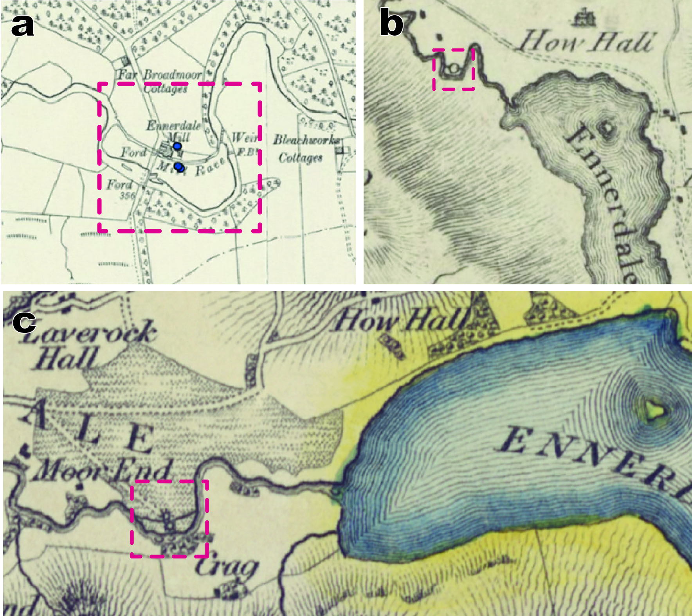

Project
Methods
Locations, mill types, and power usage, if indicated, were manually recorded from symbols and text on 18-19th century map sheets (see Cartographic Sources under Mills from Maps). Mill records were positioned precisely by hand at the time of consultation (see Accuracy and Georeferencing). After compiling recorded names from the Roy Gazetteer, those mill locations required correction for the distortion created during the georeferencing of map sheets. Where appropriate, mills from the Roy Gazetteer were collocated to mills at the same site documented from pre-Ordnance Survey county maps (dataset here) and/or Ordnance Survey map data (forthcoming; see the Scottish water mills website or Jonell et al. in Explore More for the independent data).
Because multiple surveys exist for each county, multiple observations exist at each mill site over the late 18th and early 19th centuries. Each survey serves as a ‘snapshot’ in time, recording if the mill was identified at that location by the surveyors.

Figure 6. Multiple observations of a mill through time. One mill at the exit of the Ennerdale Water occupies the same site from at least 1783 to 1898 (see red box). All maps show the mill faithfully relative to the river and its mill lade. (a) Results from the GB1900 Gazetteerhelp identify the mill and its race on the second edition six-inch OS map sheets of Cumberland. Compare this to (b) Hodskinson and Donald’s 1783 map of Cumberland and (c) the two waterwheels indicated by Greenwood’s 1823 map of Cumberland. Notice that the 1823 map suggests there were either two watermills or waterwheels working at the site.
We primarily identified i) clearly demarcated watermill sites and ii) other possible watermill sites from the more ambiguously mapped sites based on their geographic orientation and location relative to rivers and topography (see Position Relative to Riversunder Accuracy and Georeferencing). We do note many windmills, steam mills, animal mills and tide mills in our dataset. Currently, we are analysing these mill populations within our dataset in more detail, and may update the Mills from Maps section in the near future.